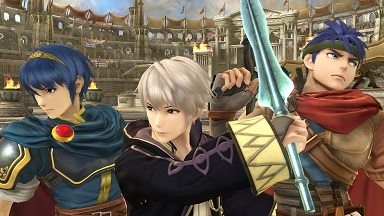

Super Smash Bros. for Wii U/Nintendo 3DS Review
by Dan Ryckert on November 21, 2014
Nintendo's all-stars assemble once again, resulting in one of the best reasons to own a Wii U (and eight GameCube controllers). .

It’s been six years since Nintendo’s all-stars last graced our television screens in a Super Smash Bros. release, but the freshness of this Wii U release may be slightly lessened thanks to the recent release of the franchise's portable debut a couple months back. The roster and basic gameplay may be identical to the 3DS release, but a variety of Wii U-exclusive modes and stages make it easy to recommend both versions to fans of the series.
If you’re watching your wallet and settling on one version, the switch to HD couch play and the use of controllers make this the one to get. As is increasingly the case with Wii U titles, an assortment of controller options are available. My favorite option by far is the classic GameCube controller, and you can connect up to eight of them via the use of two adapters. If you don’t want to spring for new accessories, the Pro Controller and GamePad both do a fine job as well. Any assortment of GamePad, GameCube controller, Pro Controller, Classic Controller, Wii Remote, and 3DS systems can be used to enable eight players to take each other on, which is exactly as chaotic as it sounds. Playing with a real controller does wonders for the overall experience, as I felt like I had substantially better control over the 49 characters than I did in the 3DS version.
0 comments
Be the first to leave a comment!